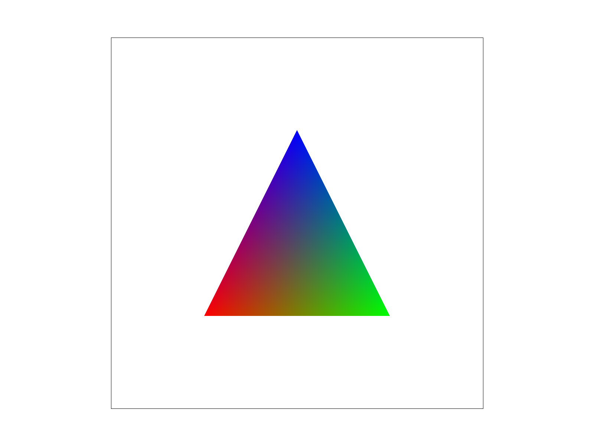

Figure 4b: Triangle with red, blue, and green vertices. Barycentric coordinates allow for interpolation of color for points inside the triangle depending on the distance between the point and each vertex.

Going into this project, I had no experience with rasterization. This project was thus a huge learning experience as I witnessed the rasterization pipeline firsthand. In task 1, we implement rasterization of single-color triangles with a simple sampling scheme. We then move to task 2 where we introduce supersampling to antialias the rendered image. In task 3, we learn how hierarchical transforms work and use them to modify a simple skeleton. In tasks 4 and 5, we implement texture mapping via pixel and level sampling. During this project, I was surprised to find that there is not one technique/a set of techniques that is superior when rasterizing and texture-mapping. For example, choosing more complex sampling can mean blurring out jaggies while also sacrificing some of the sharpness of an image. Finding the right combination of techniques takes a lot of experimenting and analyzing tradeoffs!
Rasterizing a single-color triangle involves checking if the center of each pixel of the image (naively) is inside the triangle. If yes, that pixel is assigned the color of the triangle - white otherwise. I calculated a bounding box around
the triangle, taking the max and min x and y positions using the three given vertices \(v0, v1, v2\) , to avoid checking all pixels. To test if the sample is inside the triangle, we iterate through the bounding box and at each pixel defined by
the point \((x, y)\) , take a sample in the center \((sx, sy) = (x + 0.5, y + 0.5)\).
We then conduct three line tests (Figure 1a):
A triangle is defined by the intersection of 3 half-planes. For all sides of the triangle, we
calculate the line equation and the equation for the
line normal to it. We then take the dot product of the normal and the vector defined by \((sx, sy)\) and the vertex of the triangle \(v_i\). If \(V \cdot N \geq 0\), we know that the angle between \(V\) and \(N\) is perpendicular or acute,
meaning that the
sample falls within one of the half-planes that intersects the triangle (or falls on an edge of the triangle). If this is true for all 3 lines, we conclude that the point is within the intersection of the 3 half-planes that forms the triangle and
is therefore inside the triangle.
The result of my implementation can be seen in Figure 1b. Note the aliasing present, which will be addressed in Task 2 with supersampling.
When we sample at a rate that is too low for a signal, we get frequency aliases. In order to antialias our rasterized triangles, we can increase the sampling rate or filter out high frequencies prior to sampling. Supersampling achieves the latter.
My supersampling algorithm follows that of Task 1, but for each pixel, we iterate through subpixels whose size is defined by the sampling rate. This involves two more nested for loops and a sample buffer that is sampling rate times the size of that needed in Task 1. For each subpixel, we sample the center and check if the point is in the triangle. We store the color of the triangle or white in the sample buffer for each subpixel depending on the outcome of the test. Then, each pixel is assigned the average color of its subpixels, and we write this to the framebuffer.
For Task 3, I used the transformation matrices given in lecture to implement transforms. When editing the svg file, I made sure these matrices were multiplied in the right order, implied by the hierarchy, for the intended movements. I transformed cubeman below to do a deathdrop (in bird's eye view), a dance move where you dramatically fall on your back, a single leg crooked to the side, arms splayed.
Barycentric coordinates allow for interpolation of colors/textures/etc. of points within a triangle. Each coordinate in \((\alpha, \beta, \gamma)\) represents a weight based on a point's distance from one vertex of the triangle. They essentially quantify the "influence" each vertex has on a point in determining its color, texture, and more.
This can be seen in Figure 4a, where barycentric coordinates were used to interpolate colors within the triangle. Figure 4b demonstrates this effect for a wheel composed of a triangle mesh.
Pixel sampling is when you take a sample \(x,y\) of a pixel in screen space, map it to the corresponding \(u, v\) texel in texture space, and assign the original sample the texture found at \(u, v\). Sampling rates in screen space and texture space may be equal (1:1), or vary in either direction. Figure 5 shows the case of magnification where there are multiple pixel samples per texel sample. There is also the possibility of minification where there are multiple texel samples per pixel sample. In the former case, there is insufficient resolution, and in the latter case, there will likely be aliasing. This is where different sampling techniques come into play.
Nearest sampling is when we assign a pixel the value of the texel closest to the texture sample corresponding to the pixel's center. The resulting image is more likely to appear pixelated/not blended than when using the next technique.
Bilinear sampling involves looking at the four texels around a sample. This allows us to create a box around the sample where each corner is the center of a texel. We linearly interpolate (lerp) a value at the sample's \(u\) position for each horizontal side of the box (this totals two lerps). We do a final lerp between the two resulting values in the vertical direction, finally resulting in the interpolated texture value of our sample. This technique is more computationally heavy and slower than nearest sampling, but the resulting image is smoother with sharp edges blurred out.
The differences between the two methods can be seen in Figure 6. When the sampling rate in screen space differs drastically from the sampling rate in texture space, we can see the largest difference in these methods. We see greater aliasing/jaggies with nearest sampling than with bilinear sampling.
1 sample/pixel
16 samples/pixel
PSM: Nearest
PSM: Bilinear
The ratio of screen sampling rate to texture space sampling rate may vary drastically across an image, leading to aliasing in some parts of an image and blurring in other parts. Level sampling aims to handle this situation by sampling from a texture file whose resolution matches the screen sampling rate (ideally one or a few texel samples per pixel sample). We acheive this by storing lower resolution texture files called mipmaps, which requires 1/3 more storage overhead as compared to no level sampling (sampling at level 0, full resolution by default).
I implemented level sampling by finding \(\frac{du}{dx}, \frac{dv}{dx}, \frac{du}{dy}, \frac{dv}{dy}\) for each sample (Figure 7). From this, we can use the formula in Figure 7 to calculate mipmap level, D. For zero sampling, we just sample from the full resolution texture file. For nearest level sampling, I rounded D to the closest integer value and sampled from that mipmap. For trilinear filtering, I calculated the two closest mipmap levels, sampled from both texture files, and linearly interpolated a color from both results. The latter technique was definitely the slowest and used more memory as we have to load two mipmaps. Nearest and zero sampling were comparable in terms of memory usage and speed (nearest is slightly slower), but nearest sampling had significantly greater antialiasing power. Trilinear sampling had the best antialiasing power, especially when combined with bilinear pixel sampling. This was the most computationally heavy and memory usage heavy, requiring 8 texel reads and 7 lerps. Combined with supersampling, which increases the size of the sample buffer by the supersampling rate, this was the slowest and most intensive combination. Figure 8 below demonstrates the antialiasing power of level and pixel sampling combinations at a sample per pixel rate of 1.
PSM: Nearest
PSM: Bilinear
LSM: Zero
LSM: Nearest
LSM: Linear